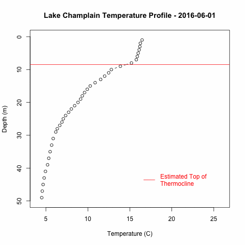
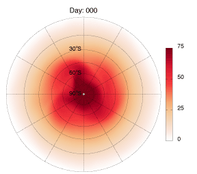
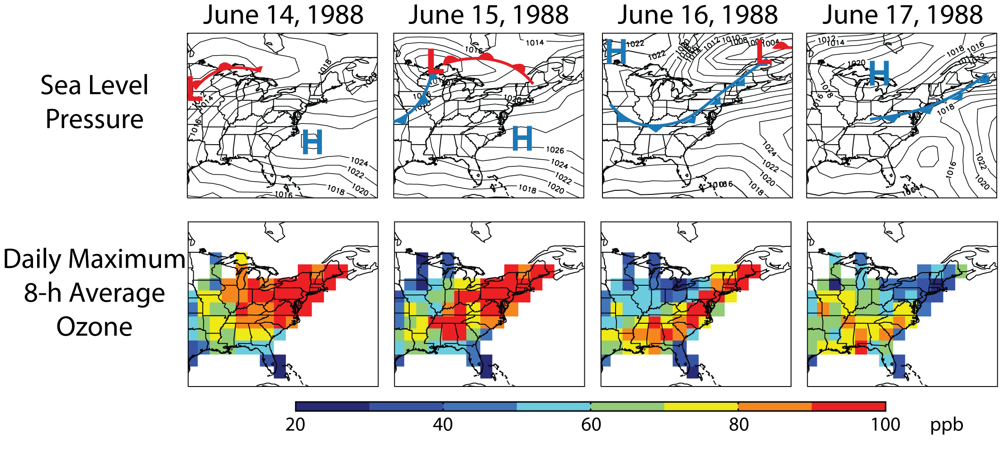
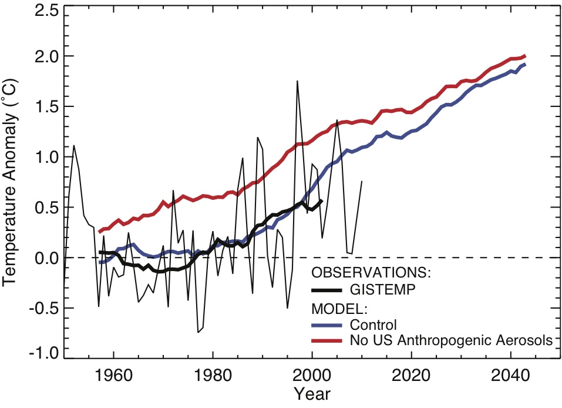
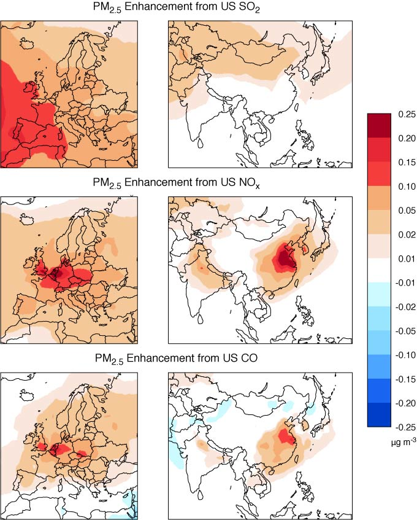

RESEARCH
I am an associate professor in the Center for Earth and Environmental Science. I am broadly interested in the dynamics and chemistry of environmental systems, particularly the atmosphere, the broader climate system, and, more recently, lakes.
Previously, I was a postdoctoral associate in the Department of Earth, Atmospheric and Planetary Sciences at the Massachusetts Institute of Technology working with Alan Plumb. I completed my Ph.D. in the School of Engineering and Applied Sciences at Harvard University. I worked with Daniel Jacob and Loretta Mickley at Harvard.
Current and Recent Research Projects:
The weather, biogeochemical cycling, and climate change impacts of Lake Champlain remain unclear. Long-term monitoring by the NY and VT Departments of Environmental Conservation have revealed significant warming since the 1970s, but the lake remains subsampled given its dynamic nature. A NOAA Sea Grant award funded the deployment of a data buoy to measure surface weather and lake thermal structure. This data is live streamed here during the field season.
Current analyses include a reanalysis of long-term weather and limnological conditions given our new data with high (15 minute) temporal resolution. In addition, I have been working to understand the carbon flux out of Lake Champlain and its long-term variability using near surface measurements of CO2 and lake water chemistry.

Above is an animated graphic showing the dynamic nature of Lake Champlain's thermal structure. The red line indicates an estimate of the thermocline depth using the canonical 1degC/m definition.
In collaboration with Lee Murray at the University of Rochester, we are installing long-term measurements of methane at Pinnacle State Park and Rochester, NY to better estimate the local sources and regional fluxes into New York State. Temporary measurements will also be conducted at the Whiteface Mountain summit observatory. Our measurements will be used in conjunction with inverse modeling to provide estimates of methane sources and impacts in New York State. This project is funded by the New York State Energy Research and Development Authority.
Chemical tracers in the stratosphere are transported by the large-scale atmospheric flow, which stretches tracer contours so that long filamentary structures form. These filaments are stretched until they become narrow enough for small-scale diffusive processes to irreversibly mix the tracer. This process destroys tracer variance (i.e. tracer concentrations are homogenized). The filaments associated with the mixing in the stratospheric "surf zone" can be clearly seen in the movie below.

The mixing process is typically represented in two dimensions (longitude-latitude on an isentropic (constant potential temperature) surface). However, when viewed in three dimensions filaments contain narrow vertical scales. Filaments are thus better thought of as thin sheets with an aspect ratio of f/N (the coriolis parameter and the buoyancy frequency, respectively). The thin vertical scales allow enhanced vertical diffusion. In the end, diffusion is likely to be more isotropic (equal in all directions) than solely horizontal as is typically assumed. Alan Plumb and I are currently investigating the consequences of this effect, in particular the idea that the effective diffusivity of the flow is independent on whether diffusion acts solely in the horizontal or vertical direction.
For more information:
Interactions Between Air Quality and Climate
Climate change and air quality problems have a common source: fuel combustion. However, these concurrent environmental problems additionally influence each other. Surface air pollutant concentrations are influenced by local meteorology, which controls pollutant chemistry and transport. Anthropogenic climate change is expected to alter many of the air quality relevant meteorological parameters. These same air pollutants affect the climate system by enhancing the greenhouse effect, scattering solar radiation, and modifying cloud properties. As a result, improving air quality can additionally have a climate cost.

The figure above shows the progression of ozone concentrations (bottom row) as a cold front sweeps across the eastern US. In Leibensperger et al. (2008) I used observations to show that the number of mid-latitude cyclones (and their associated cold fronts) tracking across the eastern US summarizes the effects of meteorology on air quality. I found a decreasing trend in the number of summertime mid-latitude cyclones over the 1980-2006 period, implying that meteorological conditions became more favorable for high ozone concentrations. Such a long-term decrease in mid-latitude cyclone frequency may have offset by half the ozone air quality gains in the northeastern US from reductions in emissions.

The net climate effect of aerosols is to cool the surface. In the US, aerosol concentrations rose in the 20th-century, peaked in the 1980s, and have been decreasing rapidly since due to a 56% reduction of SO2 emissions between 1980 and 2008 to improve air quality. In Leibensperger et al. (submitted(a), submitted(b)), I showed that these trends in aerosols caused little to no warming in the US between 1930 and 1980, but enhanced warming as the cooling effect of aerosols was removed. Additionally, I found that the climate response of the US sourced aerosols is mostly confined to the US itself, an important result suggesting US policymakers do not need to be concerned about any distant (intercontinental) climate effects of aerosol air quality regulations.
For more information:
Intercontinental Effects of Oxidants on Air Quality
Many countries are tackling air pollution problems by regulating local pollutant emissions. However, pollutants can travel long distances in the atmosphere and impact air quality on an intercontinental scale. The major components of human sourced particulate matter (PM or aerosol) pollution are formed in the atmosphere through the oxidation of precursor chemicals. For example, sulfate, the dominant human sourced aerosol, is formed by the oxidation of SO2 in the atmosphere. In many polluted locations, aerosol formation is limited by the amount of oxidants rather than the aerosol precursor.
In Leibensperger et al. (2011), I showed that changes in oxidant concentrations caused by the emission of NOx and CO cause significant increases in aerosol formation on intercontinental scales. The increase in oxidant concentrations allows more aerosol precursors (such as SO2) to form aerosol particles (such as sulfate). This effect is particularly important because it is largest in populated areas, where aersol precursor emissions are greatest. The perturbations of oxidant chemistry cause comparable or larger increases of PM than direct transport of aerosol precursors (SO2).
For more information: